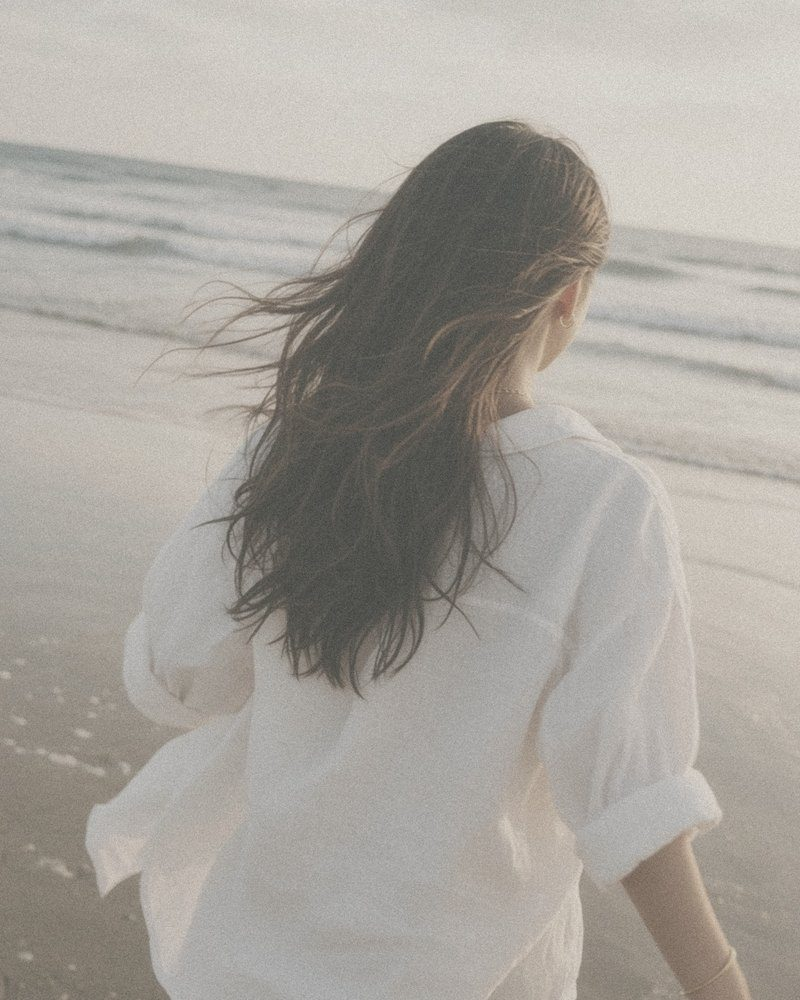

Chiara Malia · Onda e Marea
Onda
chiara
, clear and bright.
malìa
, a charm, a little spell.
A wave first drawn in the margins of a notebook, then cast in 14k gold-fill and sterling silver. Nineteen pieces. Part of every order goes to ocean conservation and women’s shelters.
On the shoreline, Onda e Marea
No. 01 — the wave as it curls over
chiaramalia.com